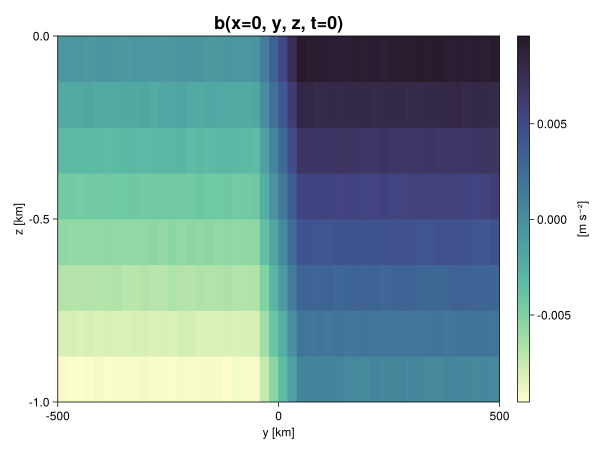
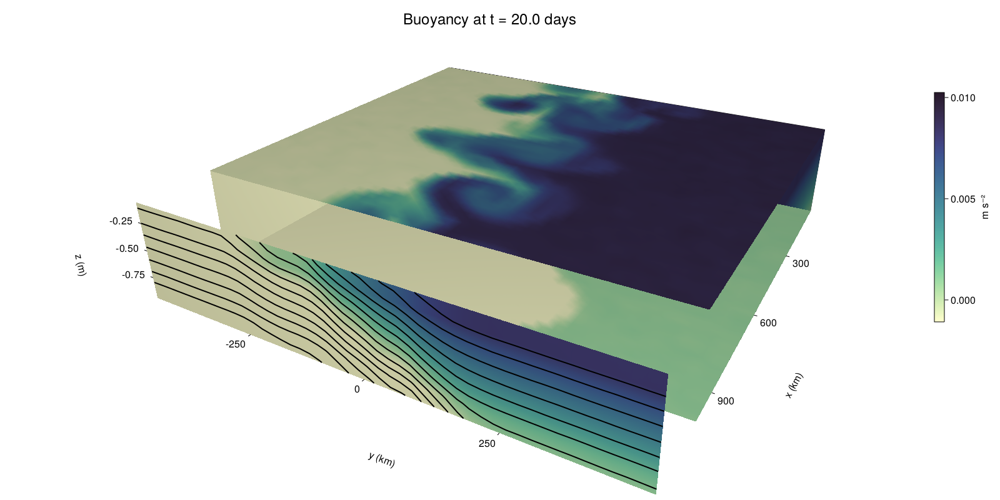

Baroclinic adjustment
In this example, we simulate the evolution and equilibration of a baroclinically unstable front.
Install dependencies
First let's make sure we have all required packages installed.
using Pkg
pkg"add Oceananigans, CairoMakie"using Oceananigans
using Oceananigans.UnitsGrid
We use a three-dimensional channel that is periodic in the x direction:
Lx = 1000kilometers # east-west extent [m]
Ly = 1000kilometers # north-south extent [m]
Lz = 1kilometers # depth [m]
grid = RectilinearGrid(size = (48, 48, 8),
x = (0, Lx),
y = (-Ly/2, Ly/2),
z = (-Lz, 0),
topology = (Periodic, Bounded, Bounded))48×48×8 RectilinearGrid{Float64, Periodic, Bounded, Bounded} on CPU with 3×3×3 halo
├── Periodic x ∈ [0.0, 1.0e6) regularly spaced with Δx=20833.3
├── Bounded y ∈ [-500000.0, 500000.0] regularly spaced with Δy=20833.3
└── Bounded z ∈ [-1000.0, 0.0] regularly spaced with Δz=125.0Model
We built a HydrostaticFreeSurfaceModel with an ImplicitFreeSurface solver. Regarding Coriolis, we use a beta-plane centered at 45° South.
model = HydrostaticFreeSurfaceModel(; grid,
coriolis = BetaPlane(latitude = -45),
buoyancy = BuoyancyTracer(),
tracers = :b,
momentum_advection = WENO(),
tracer_advection = WENO())HydrostaticFreeSurfaceModel{CPU, RectilinearGrid}(time = 0 seconds, iteration = 0)
├── grid: 48×48×8 RectilinearGrid{Float64, Periodic, Bounded, Bounded} on CPU with 3×3×3 halo
├── timestepper: QuasiAdamsBashforth2TimeStepper
├── tracers: b
├── closure: Nothing
├── buoyancy: BuoyancyTracer with ĝ = NegativeZDirection()
├── free surface: ImplicitFreeSurface with gravitational acceleration 9.80665 m s⁻²
│ └── solver: FFTImplicitFreeSurfaceSolver
└── coriolis: BetaPlane{Float64}We start our simulation from rest with a baroclinically unstable buoyancy distribution. We use ramp(y, Δy), defined below, to specify a front with width Δy and horizontal buoyancy gradient M². We impose the front on top of a vertical buoyancy gradient N² and a bit of noise.
"""
ramp(y, Δy)
Linear ramp from 0 to 1 between -Δy/2 and +Δy/2.
For example:
```
y < -Δy/2 => ramp = 0
-Δy/2 < y < -Δy/2 => ramp = y / Δy
y > Δy/2 => ramp = 1
```
"""
ramp(y, Δy) = min(max(0, y/Δy + 1/2), 1)
N² = 1e-5 # [s⁻²] buoyancy frequency / stratification
M² = 1e-7 # [s⁻²] horizontal buoyancy gradient
Δy = 100kilometers # width of the region of the front
Δb = Δy * M² # buoyancy jump associated with the front
ϵb = 1e-2 * Δb # noise amplitude
bᵢ(x, y, z) = N² * z + Δb * ramp(y, Δy) + ϵb * randn()
set!(model, b=bᵢ)Let's visualize the initial buoyancy distribution.
using CairoMakie
# Build coordinates with units of kilometers
x, y, z = 1e-3 .* nodes(grid, (Center(), Center(), Center()))
b = model.tracers.b
fig, ax, hm = heatmap(y, z, interior(b)[1, :, :],
colormap=:deep,
axis = (xlabel = "y [km]",
ylabel = "z [km]",
title = "b(x=0, y, z, t=0)",
titlesize = 24))
Colorbar(fig[1, 2], hm, label = "[m s⁻²]")
fig
Simulation
Now let's build a Simulation.
simulation = Simulation(model, Δt=20minutes, stop_time=20days)Simulation of HydrostaticFreeSurfaceModel{CPU, RectilinearGrid}(time = 0 seconds, iteration = 0)
├── Next time step: 20 minutes
├── Elapsed wall time: 0 seconds
├── Wall time per iteration: NaN days
├── Stop time: 20 days
├── Stop iteration : Inf
├── Wall time limit: Inf
├── Callbacks: OrderedDict with 4 entries:
│ ├── stop_time_exceeded => Callback of stop_time_exceeded on IterationInterval(1)
│ ├── stop_iteration_exceeded => Callback of stop_iteration_exceeded on IterationInterval(1)
│ ├── wall_time_limit_exceeded => Callback of wall_time_limit_exceeded on IterationInterval(1)
│ └── nan_checker => Callback of NaNChecker for u on IterationInterval(100)
├── Output writers: OrderedDict with no entries
└── Diagnostics: OrderedDict with no entriesWe add a TimeStepWizard callback to adapt the simulation's time-step,
wizard = TimeStepWizard(cfl=0.2, max_change=1.1, max_Δt=20minutes)
simulation.callbacks[:wizard] = Callback(wizard, IterationInterval(20))Callback of TimeStepWizard(cfl=0.2, max_Δt=1200.0, min_Δt=0.0) on IterationInterval(20)Also, we add a callback to print a message about how the simulation is going,
using Printf
wall_clock = Ref(time_ns())
function print_progress(sim)
u, v, w = model.velocities
progress = 100 * (time(sim) / sim.stop_time)
elapsed = (time_ns() - wall_clock[]) / 1e9
@printf("[%05.2f%%] i: %d, t: %s, wall time: %s, max(u): (%6.3e, %6.3e, %6.3e) m/s, next Δt: %s\n",
progress, iteration(sim), prettytime(sim), prettytime(elapsed),
maximum(abs, u), maximum(abs, v), maximum(abs, w), prettytime(sim.Δt))
wall_clock[] = time_ns()
return nothing
end
simulation.callbacks[:print_progress] = Callback(print_progress, IterationInterval(100))Callback of print_progress on IterationInterval(100)Diagnostics/Output
Here, we save the buoyancy, $b$, at the edges of our domain as well as the zonal ($x$) average of buoyancy.
u, v, w = model.velocities
ζ = ∂x(v) - ∂y(u)
B = Average(b, dims=1)
U = Average(u, dims=1)
V = Average(v, dims=1)
filename = "baroclinic_adjustment"
save_fields_interval = 0.5day
slicers = (east = (grid.Nx, :, :),
north = (:, grid.Ny, :),
bottom = (:, :, 1),
top = (:, :, grid.Nz))
for side in keys(slicers)
indices = slicers[side]
simulation.output_writers[side] = JLD2OutputWriter(model, (; b, ζ);
filename = filename * "_$(side)_slice",
schedule = TimeInterval(save_fields_interval),
overwrite_existing = true,
indices)
end
simulation.output_writers[:zonal] = JLD2OutputWriter(model, (; b=B, u=U, v=V);
filename = filename * "_zonal_average",
schedule = TimeInterval(save_fields_interval),
overwrite_existing = true)JLD2OutputWriter scheduled on TimeInterval(12 hours):
├── filepath: ./baroclinic_adjustment_zonal_average.jld2
├── 3 outputs: (b, u, v)
├── array type: Array{Float64}
├── including: [:grid, :coriolis, :buoyancy, :closure]
└── max filesize: Inf YiBNow we're ready to run.
@info "Running the simulation..."
run!(simulation)
@info "Simulation completed in " * prettytime(simulation.run_wall_time)[ Info: Running the simulation...
[ Info: Initializing simulation...
[00.00%] i: 0, t: 0 seconds, wall time: 32.030 seconds, max(u): (0.000e+00, 0.000e+00, 0.000e+00) m/s, next Δt: 20 minutes
[ Info: ... simulation initialization complete (22.900 seconds)
[ Info: Executing initial time step...
[ Info: ... initial time step complete (21.193 seconds).
[06.94%] i: 100, t: 1.389 days, wall time: 59.563 seconds, max(u): (1.253e-01, 1.209e-01, 1.657e-03) m/s, next Δt: 20 minutes
[13.89%] i: 200, t: 2.778 days, wall time: 19.016 seconds, max(u): (2.220e-01, 2.012e-01, 1.835e-03) m/s, next Δt: 20 minutes
[20.83%] i: 300, t: 4.167 days, wall time: 18.904 seconds, max(u): (2.983e-01, 2.788e-01, 1.868e-03) m/s, next Δt: 20 minutes
[27.78%] i: 400, t: 5.556 days, wall time: 18.498 seconds, max(u): (3.403e-01, 3.696e-01, 2.132e-03) m/s, next Δt: 20 minutes
[34.72%] i: 500, t: 6.944 days, wall time: 18.625 seconds, max(u): (4.176e-01, 4.766e-01, 2.045e-03) m/s, next Δt: 20 minutes
[41.67%] i: 600, t: 8.333 days, wall time: 18.741 seconds, max(u): (5.407e-01, 6.357e-01, 2.625e-03) m/s, next Δt: 20 minutes
[48.61%] i: 700, t: 9.722 days, wall time: 18.782 seconds, max(u): (7.809e-01, 9.581e-01, 3.374e-03) m/s, next Δt: 20 minutes
[55.56%] i: 800, t: 11.111 days, wall time: 18.760 seconds, max(u): (1.108e+00, 1.161e+00, 4.038e-03) m/s, next Δt: 20 minutes
[62.50%] i: 900, t: 12.500 days, wall time: 18.441 seconds, max(u): (1.327e+00, 1.199e+00, 4.615e-03) m/s, next Δt: 20 minutes
[69.44%] i: 1000, t: 13.889 days, wall time: 18.737 seconds, max(u): (1.457e+00, 1.152e+00, 4.349e-03) m/s, next Δt: 20 minutes
[76.39%] i: 1100, t: 15.278 days, wall time: 18.845 seconds, max(u): (1.370e+00, 1.260e+00, 3.992e-03) m/s, next Δt: 20 minutes
[83.33%] i: 1200, t: 16.667 days, wall time: 18.876 seconds, max(u): (1.316e+00, 1.321e+00, 3.385e-03) m/s, next Δt: 20 minutes
[90.28%] i: 1300, t: 18.056 days, wall time: 18.691 seconds, max(u): (1.363e+00, 1.335e+00, 2.867e-03) m/s, next Δt: 20 minutes
[97.22%] i: 1400, t: 19.444 days, wall time: 18.093 seconds, max(u): (1.382e+00, 1.382e+00, 2.622e-03) m/s, next Δt: 20 minutes
[ Info: Simulation is stopping after running for 5.325 minutes.
[ Info: Simulation time 20 days equals or exceeds stop time 20 days.
[ Info: Simulation completed in 5.330 minutes
Visualization
All that's left is to make a pretty movie. Actually, we make two visualizations here. First, we illustrate how to make a 3D visualization with Makie's Axis3 and Makie.surface. Then we make a movie in 2D. We use CairoMakie in this example, but note that using GLMakie is more convenient on a system with OpenGL, as figures will be displayed on the screen.
using CairoMakieThree-dimensional visualization
We load the saved buoyancy output on the top, bottom, north, and east surface as FieldTimeSerieses.
filename = "baroclinic_adjustment"
sides = keys(slicers)
slice_filenames = NamedTuple(side => filename * "_$(side)_slice.jld2" for side in sides)
b_timeserieses = (east = FieldTimeSeries(slice_filenames.east, "b"),
north = FieldTimeSeries(slice_filenames.north, "b"),
bottom = FieldTimeSeries(slice_filenames.bottom, "b"),
top = FieldTimeSeries(slice_filenames.top, "b"))
B_timeseries = FieldTimeSeries(filename * "_zonal_average.jld2", "b")
times = B_timeseries.times
grid = B_timeseries.grid48×48×8 RectilinearGrid{Float64, Periodic, Bounded, Bounded} on CPU with 3×3×3 halo
├── Periodic x ∈ [0.0, 1.0e6) regularly spaced with Δx=20833.3
├── Bounded y ∈ [-500000.0, 500000.0] regularly spaced with Δy=20833.3
└── Bounded z ∈ [-1000.0, 0.0] regularly spaced with Δz=125.0We build the coordinates. We rescale horizontal coordinates to kilometers.
xb, yb, zb = nodes(b_timeserieses.east)
xb = xb ./ 1e3 # convert m -> km
yb = yb ./ 1e3 # convert m -> km
Nx, Ny, Nz = size(grid)
x_xz = repeat(x, 1, Nz)
y_xz_north = y[end] * ones(Nx, Nz)
z_xz = repeat(reshape(z, 1, Nz), Nx, 1)
x_yz_east = x[end] * ones(Ny, Nz)
y_yz = repeat(y, 1, Nz)
z_yz = repeat(reshape(z, 1, Nz), grid.Ny, 1)
x_xy = x
y_xy = y
z_xy_top = z[end] * ones(grid.Nx, grid.Ny)
z_xy_bottom = z[1] * ones(grid.Nx, grid.Ny)Then we create a 3D axis. We use zonal_slice_displacement to control where the plot of the instantaneous zonal average flow is located.
fig = Figure(resolution = (1600, 800))
zonal_slice_displacement = 1.2
ax = Axis3(fig[2, 1],
aspect=(1, 1, 1/5),
xlabel = "x (km)",
ylabel = "y (km)",
zlabel = "z (m)",
xlabeloffset = 100,
ylabeloffset = 100,
zlabeloffset = 100,
limits = ((x[1], zonal_slice_displacement * x[end]), (y[1], y[end]), (z[1], z[end])),
elevation = 0.45,
azimuth = 6.8,
xspinesvisible = false,
zgridvisible = false,
protrusions = 40,
perspectiveness = 0.7)Axis3()We use data from the final savepoint for the 3D plot. Note that this plot can easily be animated by using Makie's Observable. To dive into Observables, check out Makie.jl's Documentation.
n = length(times)41Now let's make a 3D plot of the buoyancy and in front of it we'll use the zonally-averaged output to plot the instantaneous zonal-average of the buoyancy.
b_slices = (east = interior(b_timeserieses.east[n], 1, :, :),
north = interior(b_timeserieses.north[n], :, 1, :),
bottom = interior(b_timeserieses.bottom[n], :, :, 1),
top = interior(b_timeserieses.top[n], :, :, 1))
# Zonally-averaged buoyancy
B = interior(B_timeseries[n], 1, :, :)
clims = 1.1 .* extrema(b_timeserieses.top[n][:])
kwargs = (colorrange=clims, colormap=:deep)
surface!(ax, x_yz_east, y_yz, z_yz; color = b_slices.east, kwargs...)
surface!(ax, x_xz, y_xz_north, z_xz; color = b_slices.north, kwargs...)
surface!(ax, x_xy, y_xy, z_xy_bottom ; color = b_slices.bottom, kwargs...)
surface!(ax, x_xy, y_xy, z_xy_top; color = b_slices.top, kwargs...)
sf = surface!(ax, zonal_slice_displacement .* x_yz_east, y_yz, z_yz; color = B, kwargs...)
contour!(ax, y, z, B; transformation = (:yz, zonal_slice_displacement * x[end]),
levels = 15, linewidth = 2, color = :black)
Colorbar(fig[2, 2], sf, label = "m s⁻²", height = Relative(0.4), tellheight=false)
title = "Buoyancy at t = " * string(round(times[n] / day, digits=1)) * " days"
fig[1, 1:2] = Label(fig, title; fontsize = 24, tellwidth = false, padding = (0, 0, -120, 0))
rowgap!(fig.layout, 1, Relative(-0.2))
colgap!(fig.layout, 1, Relative(-0.1))
save("baroclinic_adjustment_3d.png", fig)
Two-dimensional movie
We make a 2D movie that shows buoyancy $b$ and vertical vorticity $ζ$ at the surface, as well as the zonally-averaged zonal and meridional velocities $U$ and $V$ in the $(y, z)$ plane. First we load the FieldTimeSeries and extract the additional coordinates we'll need for plotting
ζ_timeseries = FieldTimeSeries(slice_filenames.top, "ζ")
U_timeseries = FieldTimeSeries(filename * "_zonal_average.jld2", "u")
B_timeseries = FieldTimeSeries(filename * "_zonal_average.jld2", "b")
V_timeseries = FieldTimeSeries(filename * "_zonal_average.jld2", "v")
xζ, yζ, zζ = nodes(ζ_timeseries)
yv = ynodes(V_timeseries)
xζ = xζ ./ 1e3 # convert m -> km
yζ = yζ ./ 1e3 # convert m -> km
yv = yv ./ 1e3 # convert m -> km49-element Vector{Float64}:
-500.0
-479.1666666666667
-458.3333333333333
-437.5
-416.6666666666667
-395.8333333333333
-375.0
-354.1666666666667
-333.3333333333333
-312.5
-291.6666666666667
-270.8333333333333
-250.0
-229.16666666666666
-208.33333333333334
-187.5
-166.66666666666666
-145.83333333333334
-125.0
-104.16666666666667
-83.33333333333333
-62.5
-41.666666666666664
-20.833333333333332
0.0
20.833333333333332
41.666666666666664
62.5
83.33333333333333
104.16666666666667
125.0
145.83333333333334
166.66666666666666
187.5
208.33333333333334
229.16666666666666
250.0
270.8333333333333
291.6666666666667
312.5
333.3333333333333
354.1666666666667
375.0
395.8333333333333
416.6666666666667
437.5
458.3333333333333
479.1666666666667
500.0Next, we set up a plot with 4 panels. The top panels are large and square, while the bottom panels get a reduced aspect ratio through rowsize!.
set_theme!(Theme(fontsize=24))
fig = Figure(resolution=(1800, 1000))
axb = Axis(fig[1, 2], xlabel="x (km)", ylabel="y (km)", aspect=1)
axζ = Axis(fig[1, 3], xlabel="x (km)", ylabel="y (km)", aspect=1, yaxisposition=:right)
axu = Axis(fig[2, 2], xlabel="y (km)", ylabel="z (m)")
axv = Axis(fig[2, 3], xlabel="y (km)", ylabel="z (m)", yaxisposition=:right)
rowsize!(fig.layout, 2, Relative(0.3))To prepare a plot for animation, we index the timeseries with an Observable,
n = Observable(1)
b_top = @lift interior(b_timeserieses.top[$n], :, :, 1)
ζ_top = @lift interior(ζ_timeseries[$n], :, :, 1)
U = @lift interior(U_timeseries[$n], 1, :, :)
V = @lift interior(V_timeseries[$n], 1, :, :)
B = @lift interior(B_timeseries[$n], 1, :, :)Observable([-0.009360105016966833 -0.00811099637850499 -0.006871531723743894 -0.005607267206378032 -0.004382125737311698 -0.003128708540574251 -0.0018498539798659944 -0.0006287038328711772; -0.009376812332511896 -0.008114208018568991 -0.006894524203401417 -0.0056347205134934806 -0.004371022445931623 -0.0031053204899436737 -0.0018727329164458055 -0.0006053802181787157; -0.009385934218137845 -0.008110912206576166 -0.006915263529623772 -0.0056337574752004 -0.004398612560670524 -0.0031090164843014544 -0.0018704405023486793 -0.0006178597277877513; -0.009355751466621785 -0.008107969491169131 -0.0068750338673492055 -0.005637211919569981 -0.004372256362698668 -0.0031130770961755607 -0.0018552914423685684 -0.0006254449732062068; -0.00937007291463676 -0.008126798377330229 -0.006884285003935921 -0.0056305398527129345 -0.004384736316476721 -0.0031305787090297756 -0.0018880285967372724 -0.0006267974476743269; -0.009424676846097121 -0.008112470710599907 -0.006882442583645136 -0.005628891755141331 -0.00438710342800078 -0.0031264441504475645 -0.0019048765941334159 -0.0006382025542502229; -0.009367012431277381 -0.008143415832931792 -0.006855620703530389 -0.00560790152562339 -0.004368784120419523 -0.0031295852146246868 -0.001873006651795023 -0.0006213089663078055; -0.00936021290437809 -0.008145486698924558 -0.006872884209792689 -0.005623055459825569 -0.004356506457800397 -0.0031134190692186296 -0.0018746431055577455 -0.0006298445097614695; -0.0093657383256555 -0.008111756849084776 -0.006882006002044767 -0.005617508975512845 -0.004386030909161971 -0.00310943529994516 -0.001869982520174507 -0.0006093929319583947; -0.009365430038446339 -0.008122750173303385 -0.006882094110544714 -0.00563362476885515 -0.004389026648415524 -0.0031320251385159436 -0.0018705223603699278 -0.0006325813516386221; -0.009390621517754357 -0.008118522030860388 -0.006868284376479124 -0.0056149350819970694 -0.004355210332350185 -0.0031196176160256835 -0.001876423222265485 -0.0006450780811905226; -0.009371692091345222 -0.008115975473435936 -0.00688276789746988 -0.005673767430179538 -0.004394029011711589 -0.00311308639701312 -0.0018706952141121847 -0.0006551080195641955; -0.009378244151685934 -0.008136039188421063 -0.006888616478843967 -0.005639798492577324 -0.0043735190941387595 -0.003127427315354756 -0.0018940425137900273 -0.000618728888255352; -0.009375310053372098 -0.008101440208770872 -0.006911877757126153 -0.005625798377604098 -0.004374301123970397 -0.0031261912730876002 -0.0018852882283038879 -0.0006250439231242578; -0.009401927694606863 -0.008101106292942167 -0.006897455640655653 -0.005636709024348219 -0.00436187766366944 -0.0031539225769340925 -0.0018868447807318372 -0.0006192309737076585; -0.009365409363432236 -0.008114962598079934 -0.0068863531320142385 -0.005608763149922255 -0.004356925212602139 -0.003127020537530499 -0.0018903138448416186 -0.0006279816954529404; -0.00937673563503738 -0.008139661853080316 -0.006877368671971695 -0.0056272853801341794 -0.00437132726794029 -0.0031319158506564293 -0.0018616688336083908 -0.0006333493658716311; -0.009375212260751586 -0.008128497100394434 -0.006856637357279941 -0.005636955562931585 -0.004395600727874593 -0.003109915968016904 -0.001874858965258055 -0.0006204004203461578; -0.009378458647217508 -0.008136018964135057 -0.006846300508295526 -0.0056195147318155204 -0.0043612873343866175 -0.0031382446060930157 -0.0018898568029221904 -0.0006262421308364056; -0.009359303080588825 -0.008098137529769293 -0.0068942286353852545 -0.00561680113200816 -0.004365200228876138 -0.003110357454785313 -0.0018773334801139164 -0.000610797645508262; -0.009357384532246696 -0.008118139647298416 -0.0068827127963447645 -0.0056470202104185185 -0.004385048559771392 -0.003105640731319219 -0.0018861274335680983 -0.0006288427854772091; -0.009400746459239799 -0.008127902910411709 -0.006861379685119407 -0.005615298393515121 -0.004376023558301961 -0.0031364409891364697 -0.001866032424985225 -0.0006299442077967952; -0.007488957548573823 -0.006257562255262524 -0.004993319631592876 -0.003738852908627179 -0.0024886669363540248 -0.0012260349291179995 6.548506397934449e-6 0.0012585358117950924; -0.005426095075110626 -0.004141157426980607 -0.0029391757379694113 -0.0016777779310068245 -0.00041225236723233037 0.0008416469032234251 0.0021127182785263374 0.0033355588499142624; -0.003313243651663362 -0.002101431049864459 -0.0008325731957639168 0.000416807280522283 0.0016886041699282585 0.00291699959129906 0.004148238309450492 0.005440151323591112; -0.0012648783478062375 -3.0016787429118608e-6 0.0012410182221822838 0.00250753032666454 0.0037680127354057947 0.004984746532891251 0.006251067841346827 0.0074931818234981054; 0.0006391171515913748 0.001866727860845135 0.0031259823226361155 0.004393941924083967 0.005645117448446468 0.00689372380668118 0.008143741519137347 0.009371302528293131; 0.0006360130883107687 0.0018668831329335122 0.0031239944398321552 0.004392629410207665 0.005632362424291334 0.006868173926292541 0.008126674155113362 0.009369562316544353; 0.0006389716617778851 0.00187860220826498 0.0030997683587054288 0.004376265706833224 0.005607764209347141 0.006881785231642454 0.008122249060438692 0.009344326116540208; 0.0006113976932240249 0.0018458435590184641 0.003146691663644591 0.004349154522484128 0.005627343202327796 0.0068707178640594856 0.008147281692447132 0.009359306672311288; 0.0006026625996217409 0.0018768947467246242 0.0031173361779963447 0.004357194046603197 0.005626459389754265 0.006866854430489088 0.008126347032473428 0.009364349153567228; 0.000637149096750406 0.0018759708427270843 0.003125648828934289 0.004368913102572257 0.00558592764976804 0.006893436894503325 0.008112525180614736 0.009347938200640893; 0.0006259802867961743 0.0018778877923218338 0.0031388510742452434 0.0043617423977874705 0.005619643806943325 0.0068757884392251145 0.008112837099407987 0.009377185119048318; 0.0006080207714449206 0.0018677564625140233 0.003119065783428491 0.00438406329481227 0.0056121227029774364 0.006895329726752261 0.00813638691287977 0.009386606335257465; 0.0006295952020538456 0.0018986181512101994 0.003126756516664922 0.0043588329490631015 0.005594513621642888 0.00685517215647682 0.008156482087350465 0.009375895802684203; 0.0006377660868769356 0.001868400045924263 0.003133164052729729 0.004357408586752172 0.005652765128750567 0.006919580563995518 0.008117812694234661 0.009365818083347148; 0.0006511731732720306 0.0018401575947236126 0.003131632028634651 0.004356254371050327 0.0056198406152126144 0.006896573194943728 0.008110576461012877 0.009365600272763095; 0.0006139892834628281 0.001863268795753818 0.0031243215453196052 0.00436960187511063 0.0056437204997184034 0.006859704395692649 0.008114618543835798 0.009351883883628277; 0.0006258134170180865 0.0018956267098585453 0.003132389136050483 0.004386220505331015 0.005628716539079888 0.006900797120304621 0.008111540398061558 0.009385685102291149; 0.000633507191791045 0.001862903154063311 0.0031427503259377136 0.004375540543703923 0.005619176992528052 0.0068697995192398805 0.0081073958575506 0.009397836145696782; 0.0006118902509369811 0.0018891905258512844 0.003156180996650823 0.0043669765178601366 0.005615542304212204 0.006852461803960669 0.008135121688767904 0.009367020838385759; 0.0006181513496778269 0.0018752610894104493 0.0031211890006240576 0.004375829290693388 0.005642701228451101 0.006883442448098426 0.008112827869825812 0.009369834457968918; 0.0006444670808072714 0.001851379751268154 0.0031244821802109586 0.004391111074263614 0.005630543294388634 0.006879431860803022 0.008140993181792278 0.009366954170708841; 0.0006304197129726836 0.00189382271001188 0.0031447663358448023 0.004352223431027552 0.005647544377138702 0.006872894586586977 0.008134855584233635 0.009370300245299055; 0.000641104388181159 0.001861437990657737 0.0031519671263055458 0.004377077508583457 0.005628397396793042 0.00686730175506167 0.00810146900303148 0.009390737075167832; 0.0006225389341747103 0.0018553224329061018 0.0031228906198424136 0.004389067390535305 0.0056099194825723455 0.006886134904164672 0.008107395016795802 0.009365431425209144; 0.0006159993303452474 0.0018832104211697683 0.003096618360876605 0.004360842161687299 0.005597074498747649 0.00688789550138914 0.00813501151908255 0.009384160317270454; 0.0006511146745457439 0.001866766717369425 0.0031288699841440226 0.004359163939723983 0.0056039302208979935 0.006866553956951747 0.008133686747022542 0.009369914407493863])
and then build our plot:
hm = heatmap!(axb, xb, yb, b_top, colorrange=(0, Δb), colormap=:thermal)
Colorbar(fig[1, 1], hm, flipaxis=false, label="Surface b(x, y) (m s⁻²)")
hm = heatmap!(axζ, xζ, yζ, ζ_top, colorrange=(-5e-5, 5e-5), colormap=:balance)
Colorbar(fig[1, 4], hm, label="Surface ζ(x, y) (s⁻¹)")
hm = heatmap!(axu, yb, zb, U; colorrange=(-5e-1, 5e-1), colormap=:balance)
Colorbar(fig[2, 1], hm, flipaxis=false, label="Zonally-averaged U(y, z) (m s⁻¹)")
contour!(axu, yb, zb, B; levels=15, color=:black)
hm = heatmap!(axv, yv, zb, V; colorrange=(-1e-1, 1e-1), colormap=:balance)
Colorbar(fig[2, 4], hm, label="Zonally-averaged V(y, z) (m s⁻¹)")
contour!(axv, yb, zb, B; levels=15, color=:black)Finally, we're ready to record the movie.
frames = 1:length(times)
record(fig, filename * ".mp4", frames, framerate=8) do i
n[] = i
endThis page was generated using Literate.jl.